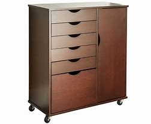
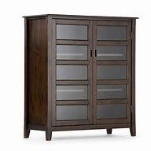
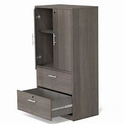

A filing cabinet (or sometimes file cabinet in American English) is a piece of office furniture usually used to store paper documents in file folders. In the most simple context, it is an enclosure for drawers in which items are stored.
Having all the necessary files and folders stored in a single place can reduce loss of company information or damage to the filing cabinet’s contents. Companies can also increase security to the files and folders that are stored in the filing cabinet by getting fire-proof units.
home